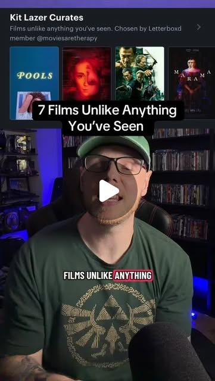

Instagram Reel

Seven films unlike anything you’ve seen on my shelf at the @letterboxd Video ...
video transcript (enriched by ClaudeClaw)
Summary
[CAPTION]
Seven films unlike anything you’ve seen on my shelf at the @letterboxd Video Store!. Thank you to Letterboxd for allowing me to curate my own shelf of movies I know you’ll love, what an honor.
[CAPTION]
Seven films unlike anything you’ve seen on my shelf at the @letterboxd Video Store!! Thank you to Letterboxd for allowing me to curate my own shelf of movies I know you’ll love, what an honor. #movies #film
[VIDEO]
Here are seven films, unlike anything you've ever seen that you can watch right now. I have my own shelf on the letterboxed video store, and it's the coolest thing ever. It's called Kit Laser Curates. If you like movies, I'm quite certain that you know what Letterboxd is, but you might not know that they have a video store where you can rent and watch movies right in the app. There are movies in there that aren't even released yet, and hard to find films and other curated wonders. And I got to curate my own shelf. I chose pools, which was recently released in theaters. This is a coming of age summer drama about a girl who's stuck in summer school and she has one day to get her life back on track before she's kicked out of school, and she spends that night hopping from pool to pool with her friends instead. It's one of those slice of life gems that'll make you laugh, make you cry, but the entire time it's wrapped around you like a warm blanket. And this is the only place you can watch it. Then I chose Red Rooms, one of my favorite movies of 2024, which was a stellar year. A searing, bone chilling psychological thriller, an indictment of the voyeurism and loneliness of our chronically online existence. There are no jump scares, no gore, just captivating images and a score that slips inside you like a syringe. It's We're All Going to the World's Fair meets Zodiac. Twilight of the Warriors Walled In was my next choice. A beautiful homage to Hong Kong action cinema with high flying set pieces and stunning cinematography. It's like Spirited Away meets gangs of New York. You have to watch it. Then Marima, and you're thinking, is he talking about Marima again? Yes, I am. That's how important it is. It's a Maori gothic horror, and it's that good. I'm quite literally begging you to watch it in one of my favorite movies of the year so far, and it's right there. Then some throwbacks. I've got La Samurai, the new 4K restoration of the landmark 1967 film. The only bad thing about this movie is that it will have you contemplating buying a fedora. It's that cool. The movie, not Fedoras. Short Term 12 is one of the most beautiful, devastating indie films that I've ever seen, and I'm delighted to help encourage other people in watching it. I've loved it for many years. It hits every single time. You've got Breed Larson, Lakeith Stanfield, Caitlin Deaver, Romy Malik, before anybody knew who they were. It's directed by Destin Daniel Creton, an indie film so good it got him the job directing Shang-Chi and the new Spider-Man brand new day that's about to come out. And then finally, my dearest lesbian space princess. I wanted to include an animated film and I went with this delightful, sapphic science fiction wonder filled with humor and heart and stunning animation. It's the kind of film you need to watch as soon as possible so that you can be insufferable about having discovered it first amongst your friends. Thank you to Letterboxd for letting me do this. It was an absolute honor. Go check out my shelf and let me know what you think, but be kind to each other in the comments and love what you love.
View original on Instagram Reel →